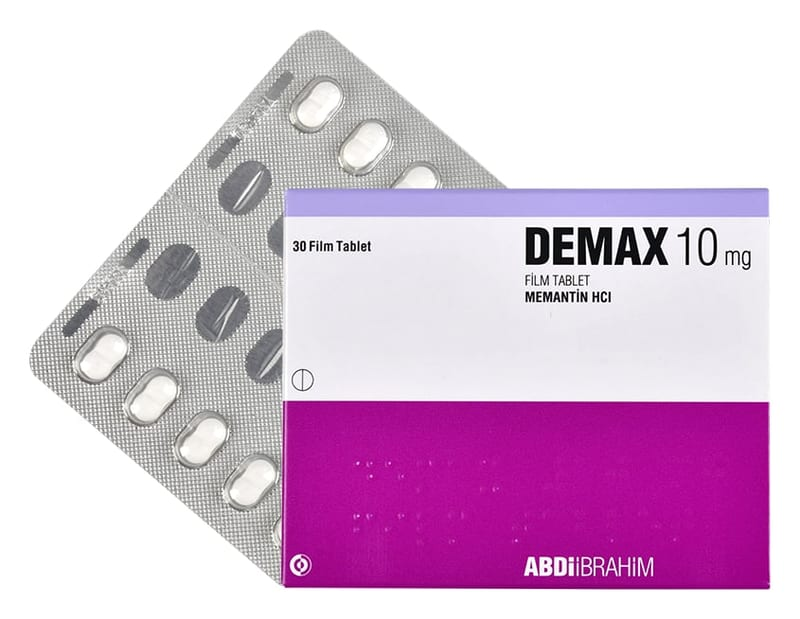

Demax 10 mg Film Kaplı Tablet, 30 Adet

Ne için kullanılır
KT · Bölüm 1DEMAX film tabletler, beyaz, ortaya doğru incelen, bikonveks, bir yüzünde ‘10’ baskısı bulunan, her iki yüzü çentikli film tabletlerdir. 30, 50 ve 100 film tabletlik blister ambalajlarda piyasaya sunulmaktadır.
DEMAX, demansa karşı kullanılan ilaçlar grubundadır. Alzheimer hastalığında görülen hafıza kaybı, beyindeki mesaj sinyallerinin bozulması nedeniyle ortaya çıkar. Beyinde, NMDA-reseptörü denilen oluşumlar bulunur. Bu oluşumlar, öğrenme ve hatırlama için önem taşıyan sinir uyarısında rol oynarlar. DEMAX, NMDA reseptör antagonistleri denilen bir ilaç grubuna dahildir ve NMDA reseptörleri üzerinde etki göstererek sinir uyarısını ve hafızayı iyileştirir. DEMAX, bu etkisi nedeniyle, orta ve şiddetli evre Alzheimer hastalığının tedavisinde kullanılır.
Bu ilacı kullanmaya başlamadan önce bu KULLANMA TALİMATINI dikkatlice okuyunuz, çünkü sizin için önemli bilgiler içermektedir.
• Bu kullanma talimatını saklayınız. Daha sonra tekrar okumaya ihtiyaç duyabilirsiniz. • Eğer ilave sorularınız olursa, lütfen doktorunuza veya eczacınıza danışınız. • Bu ilaç kişisel olarak sizin için reçete edilmiştir, başkalarına vermeyiniz. • Bu ilacın kullanımı sırasında, doktora veya hastaneye gittiğinizde bu ilacı kullandığınızı söyleyiniz. • Bu talimatta yazılanlara aynen uyunuz. İlaç hakkında size önerilen dozun dışında yüksek veya düşük doz kullanmayınız.